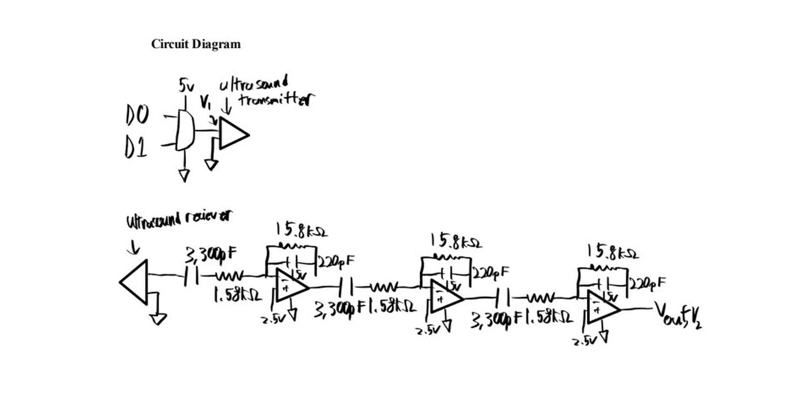
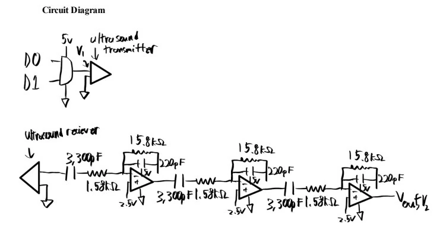

← Back to selected work
Parallelometer angle instrument
An angle-measurement instrument using dual 40 kHz ultrasonic sensors, analog signal conditioning, and MATLAB time-of-flight processing.
Ultrasonic sensingAnalog filtersMATLABExperimental validation

CourseSensors & Instrumentation
SensorsDual 40 kHz ultrasonic
Measured14°
Reference16°
Build and signal chain
The instrument used a transmitter and receiver pair with three-stage band-pass amplification to make the ultrasonic signal usable for timing measurements.
Time-of-flight data were processed in MATLAB to calculate the angle from the measured path geometry.
Validation
14°measured angle
16°reference setup
2°validation error
The result was a practical test of the full sensing chain: ultrasonic hardware, analog filtering, data acquisition, and model-based angle calculation.
Visuals
Selected CAD, test data, and simulation outputs from the project.

More engineering work
Return to the main portfolio for mechanical design, controls, thermal-fluid modeling, and manufacturing projects.